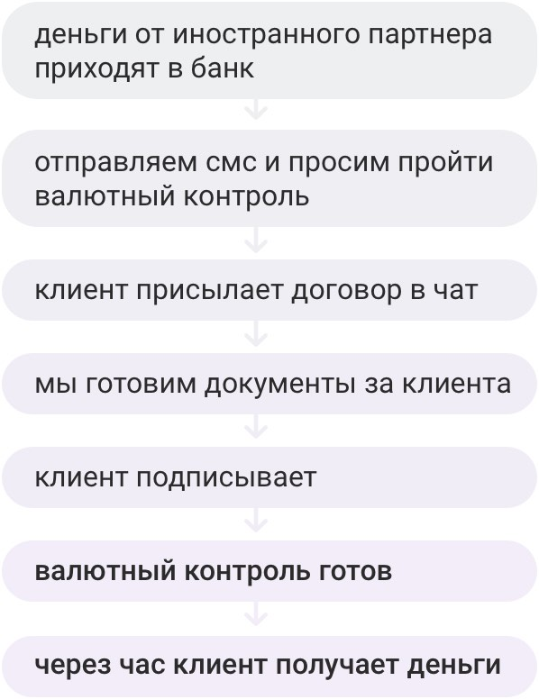
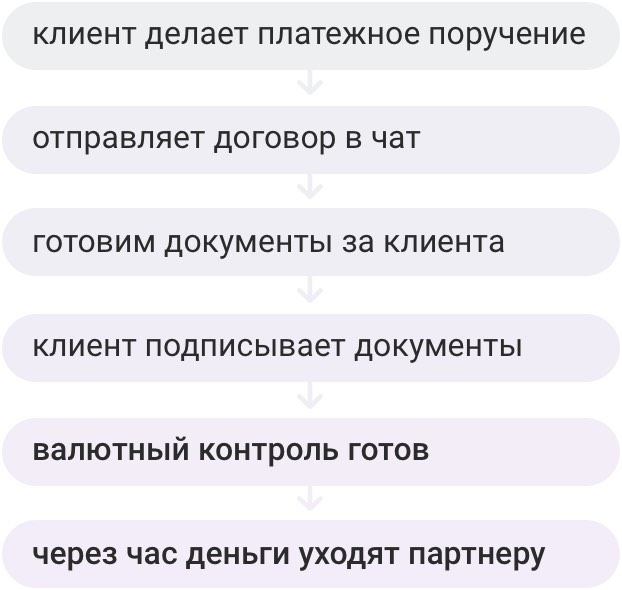

Валютный контроль проходят все, кто получает или переводит деньги в валюте или иностранным гражданам и компаниям. Чтобы пройти его, нужны документы: например, договор с иностранцем и справка о валютных операциях. Еще у банка бывают вопросы, на них тоже надо отвечать.
Мы всё делаем в чате: запрашиваем документы, задаем вопросы и помогаем со справками. Не надо приезжать в банк, чтобы пройти валютный контроль.
Если вы получаете или переводите деньги через Uber, Upwork, Google Play, Google Adsense, AppStore, Airbnb или Booking, проведем валютный контроль за два часа. Чтобы его пройти, присылайте в чат скан договора и скриншот платежа из личного кабинета.
Срок валютного контроля отсчитываем с минуты, как получим договор и скриншот платежа.
Если вы работаете с другими партнерами, валютный контроль проведем за четыре часа. Срок отсчитываем с минуты, когда вы пришлете договор — без него не сможем начать.
Иногда валютный контроль занимает больше времени. Задержка случается, если в договоре ошибки или неточности, и мы не можем принять его без правок. В таких случаях понадобятся ваши пояснения. Если будете на связи, валютный контроль проходит быстрее.
Получить деньги
Отправить деньги
На валютный контроль закон дает 15 дней. Чтобы вы не пропустили срок, мы напишем и позвоним. Так вы пройдете валютный контроль вовремя и не получите штраф.
Отсчет срока начинается, когда деньги пришли в банк. Как только увидим поступление, расскажем о нем: отправим смс, письмо на почту и сообщение в чат. Если вы не свяжитесь с нами 10 дней, позвоним на сотовый. Мы будем теребить вас, пока вы не ответите.
Валютный контроль проводим почти без участия клиента. От вас ждем скан договора с партнером, всё остальное делаем сами: заполняем распоряжение, справку о валютных операциях и паспорт сделки. Вам не надо разбираться в терминах и помнить, что такое признак платежа или код операции, чтобы сдать документы.
Еще для валютного контроля не придется ездить в банк: договор принимаем в чате, остальные документы клиенты тоже подписывают в чате. Валютный контроль можно пройти из дома.
Прежде чем перейти в Модульбанк, вы можете протестировать наш валютный контроль. Для этого необязательно закрывать валютный счет в другом банке.
Вы можете получать деньги и проходить валютный контроль по одному договору в разных банках: например, за июль в Модульбанке, за август — в другом. Если хотите проверить наш валютный контроль, отправляйте договор в чат. Всё остальное сделаем мы.
Чтобы получать или переводить валюту, вы оплачиваете две услуги: валютный контроль и перевод денег.
У нас фиксированные тарифы на валютный контроль, без процентов от суммы.
| Получить или перевести | Стоит |
| до 500 000 рублей | 300 рублей |
| от 500 001 рублей до 2 000 000 рублей | 1000 рублей |
| от 2 000 001 рублей | 3000 рублей |
За эти деньги мы проверим договор с партнером, заполним за вас распоряжение и справку о валютных операциях. Если вы на Оптимальном или Безлимитном тарифе, паспорт сделки заполним бесплатно, если на Стартовом — за 1500 рублей.
Стоимость услуги на скорость не влияет: за 300 рублей проводим валютный контроль также быстро, как 3000 рублей.
Еще вы платите комиссию за перевод и получение денег. Если платите со счета Модульбанка, комиссию берем мы, и комиссия составит 30 евро или долларов с каждого платежа. Если получаете деньги на счет Модульбанка, то комиссия может быть 15-30 евро или долларов. Эту комиссию берут иностранные банки, точную сумму мы не знаем.
валютный счет
Напишите в чат, что хотите открыть валютный счет, и мы откроем счет за час
договор
Договор принимаем по чату, поэтому приезжать в банк не надо
Распоряжение, справку и паспорт сделки готовим сами и присылаем в чат. Вам останется их подписать
Мы откажем в валютном контроле, если сомневаемся в законности сделки. Сомнения возникают, когда в договоре расплывчатые формулировки: непонятно, какую услугу и на каких условиях клиент оказывает.
Если беспокоитесь, покажите нам договор до перевода денег. Мы проверим его бесплатно и расскажем, всё ли в порядке. Если будут замечания, вы успеете их учесть и пройдете валютный контроль без проблем.